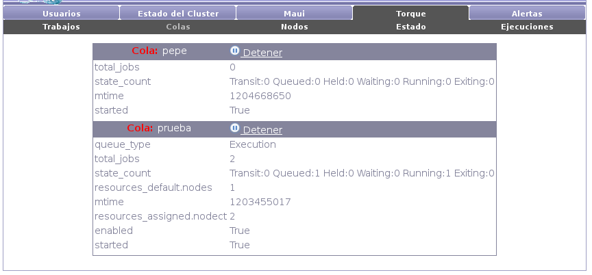

Next: Nodos Up: Torque Previous: Trabajos Contents

Torque maneja un conjunto de colas de ejecución en donde son ingresados los trabajos para ser ejecutados y de donde Maui evalúa cual será el siguiente trabajo a ejecutar. Estas colas tienen ciertas propiedades que agrupan a los trabajos, p.ej.: prioridad de ejecución, tiempo máximo de ejecución, etc.
Una cola pueden ser detenida. Cuando una cola es detenida son detenidos todos los trabajos de la misma.